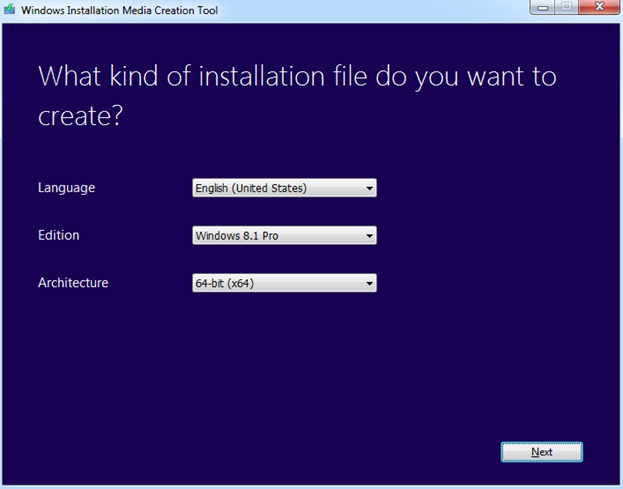
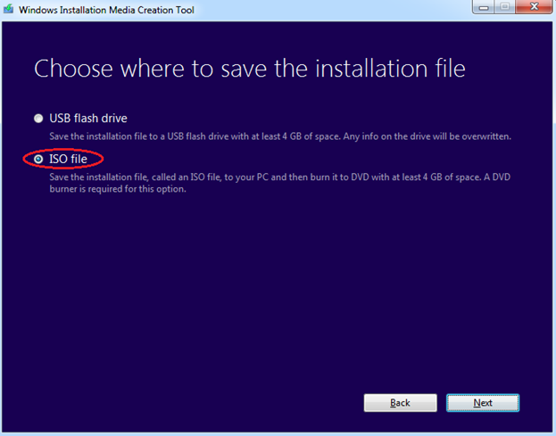

How to get Windows 7,8,10 ISO
Where?
You can get it anywhere in internet for you choose, but I strongly recommend you download Windows ISO from official Microsoft website.
For example, if you need to create Windows 8 bootable flash drive look for ISO here:
How?
You need only:
- Push the "Download Tool Now" button for downloading small Microsoft tool that can give you necessary ISO
- Launch application, set Language, Edition and Architecture of operation system which you are looking for, then click "Next" 
- Select "ISO file" radio-button and clicking "Next" you will start downloading... 
You certainly can select "USB flash drive" on third step, and in this case, Microsoft application will force you to reformat the memory stick...
Good News! It's not necessarily for me! )
Why it's better to use official cite of Microsoft?
- Malware is impossible
- Trusted publisher :)
- Always actual distributions
- Always actual description
- Lots of information available
- And so on...